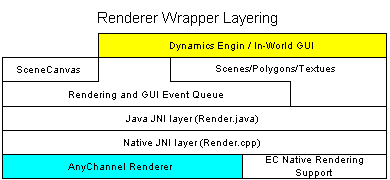
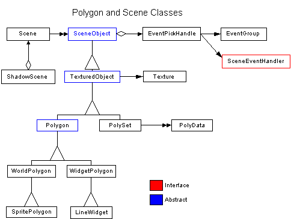

Last updated: [98/05/19 MES]
Mike Slominski: mike@communities.com.
Microcosm uses a third party native renderer from Any Channel. The Any Channel renderer provides all of the functionality necessary to display 3D objects, sprite objects, and GUI objects in Microcosm's main window.
The Renderer Wrapper is a java wrapper that provides a java front end to the renderer's native API. Through the wrapper, polygons of various types and the scenes they are displayed in can be defined and manipulated as java objects. This package also implements the java window that the renderer runs in and handles the translation of AWT Window and GUI events into in-world polygon based events.
The main requirement of the Any Channel renderer is that it efficiently display our worlds. There are a large number of specific requirements - on the level of "implements pick-through transparent textures" - but they are not included here. If enough people think it would be good to document them I'll fill them in later.
As for the render wrapper, the first requirement is to provide a Java OOP interface to the native API of the Microcosm renderer and the second requirement is to translate AWT GUI events into in-world events.
The major components of the renderer subsystem are the:
The event handling and its' relationship to the other classes is confusing and could use to be cleaned up. Also, the event handling runs in its' own thread and so does one of the renderer's major clients, the dynamics engine. It may be worth while to look at combining these threads.
None.
Here is a simple diagram of layers of the renderer wrapper. Cyan is for 3d part code and yellow denotes customers of the package.

Basic wrapper
Currently, all requests of the renderer that return state of renderer objects (e.g. polygons) go directly through the API wrapper Render.java. Render.java has no non-static methods and very few public methods: most are package private. In addition to Render.java, there is the RenderQueue.java class. This class manages an "event" queue which is processed in it own thread. All requests to the renderer that don't go directly through Render.java go through the single RenderQueue object (it's a singleton) but currently only AWT events and requests to Re-render a scene are placed on the event queue - the rest are executed synchronously. RenderQueue does not make calls directly into native but also goes through Render.java. All calls into native are synchronized and therefor guarded by Render.java's class lock - the Any Channel native renderer is not thread-safe.
The renderer package was designed so that the static methods in Render.java were only accessed directly by higher-level wrapper objects. The intent was that the users of this package would only have to deal with higher level things like polygons, scenes, and textures.
Scene
Scene is the class that encapsulates a renderer context: in the renderer, a context is a way of grouping together everything that it takes to define a particular view and what's in that view. Every scene has a camera that defines what is viewable. It is possible to define renderable objects that are not part of a scene but they must be a part of a scene to be rendered. In Microcosm, there is usually only one Scene: except during Scene transitions where there are two extra temporary scenes; and except for camera thumbnails in multi-camera regions where each thumbnail is a separate ShadowScene which is a proxy to Scene. At least one Scene must be associated with a SceneCanvas, which is a subclass of java.awt.Canvas. The SceneCanvas provides the GUI events and the native window handle that the renderer needs to actually draw stuff on screen. Microcosm uses one SceneCanvas but there is no architectural limit to how many SceneCanvases there could be.
Polygon classes
There is a tree of polygon classes (see the OMT diagram below). SceneObject and TexturedObject have functionality common to all types: mostly having to do with activation, scene membership, texture association, and texture display attributes (e.g. transparency). Below this are Polygons and PolySets. These are fundamentally different types of objects. PolySets are full 3D sets of native polygons used to make up solids. They have bounding spheres and are depth clipped correctly regardless of orientation. Subclasses of Polygon on the other hand are 2D polygons that can be located in 3D space and are only clipped correctly when they face normal to the scene camera. SpritePolygon, derived from WorldPolygon, is the class that is used to build in-world "sprite" objects. SpritePolygons are rectangular and contain methods to help keep their orientation fixed relative to the camera. WorldPolygons can have up to 16 sides and their manipulation is more basic. WidgetPolygon is the class that is used to build front plane UI elements: controls, word balloons, pie menus, etc.. WidgetPolygons are specified in device coordinates and always appear in front of in-world stuff. In uCosm, the PolySets in this package are not used. Instead, this functionality is accessed directly in native by Kirk's animation engine.

The renderer wrapper resides in coms1/ui/gui/scene and the package name is ec.cosm.gui.scene, the ec5 version resides in ec5/javasrc/ec/ui/gui/renderer and the package name is ec.ui.gui.renderer. The renderer wrapper is JavaDoc'ed but the comments are a little lacking - especially in the code added by Harry and Russ. The renderer DLL can be found in /ec/TP/AnyChannel/aclib.dll. The source code for the Any Channel renderer is in ???.
Event handling
It was originally planned that all requests of the renderer would be queued on the RenderQueue event queue and processed in a separate thread. This had the advantage that there would be only one entry point into the native renderer and that requests would be processed in the same order in which they were queued. The event handling was originally written with this in mind. The problem with this was that making any request to the renderer that returned anything became complicated and messy because of the asynchronicity. So a change was made to queue only those renderer requests that didn't return anything. This proved to work but preformed poorly: calls to change polygon and texture state were bogging things down enough that event handling felt sluggish and re-rendering was chaotic. After playing around with the remaining set of requests that were being queued, the best results were achieved by queuing only awt events and requests to re-render the scene. Not queuing anything was tried and resulted in lost mouse events and other problems.
All of this happened in early 1997 when we were using Java 1.0.2 and when the dynamics engine was fairly primitive. One of the big reasons to run our own queue was to preserve AWT events because this wasn't done correctly by the AWT. It may be time to simplify the event handling and get rid of the RenderQueue's thread. Even if we decided to keep the thread we should make a final decision about what gets put on the event queue and what doesn't and clean up the code paths.
Synchronization
There renderer is not thread safe. When making a call directly into the renderer by means other than the wrapper (@see 3D animation engine), the call(s) should be enclosed in a synchronized(Render) {} block to grab the same lock that the rest of the code uses. This is the only time to grab Render's class lock and anything else trying to grab it could easily cause a deadlock.
The RenderQueue and Render classes are called from multiple threads and controlling request synchronization can be tricky. One common case is when the dynamics engine wants to batch up a bunch of polygon position and texture changes (to move an avatar for example). These change requests are not queued and each one is executed as it is encountered. The problem is that there could be a request to re-render a scene waiting in the event queue and this re-render request could get executed in-between change requests. It is important to keep a request to re-render a scene that may be sitting on the queue from executing until all the changes that are a part of the batch are finished. Otherwise, a partially updated object would be rendered. This can be done by enclosing the changes in a synchronized block which grab's the RenderQueue's object lock: synchronized (RenderQueue.getQueue()) {}. The call to re-render should also grab this lock and it will wait while the changes finish executing.
Another example happens during scene transitions. There are three phases to a scene transition. The first phase is the old scene rendering normally and ends when the last call to re-render the old scene gets called. The second phase is when the transition rendering happens which is a special type of rendering. And the third phase is when the transition is done and the new scene's begins to be rendered normally. Now between the 1st and 2nd phases all of the GUI plane polygons that make up the control buttons and such have to be moved over to the new scene. This is because the transition rendering code uses the GUI plane from the new scene and not the one from the old scene. The problem is that if a call re-render the old scene happens after the GUI polygons have been moved, we'll get at least one frame of no GUI polygons which shows up as a big hunk of black at the top and bottom of the window. When we are in the transition control code we know no more calls to re-render the old scene will get put on the event queue but we don't know if all of the calls to re-render sitting on the event queue have been executed. We could move all the GUI polygons over to the new scene and then get stabbed in the back by an old call to re-render.
Grabbing locks in this case doesn't work because we need the event queue to do the transition rendering, we can't lock it out. The solution is a special render event called a "sync event" which just places a sync object on the queue. When the sync event object get processed, the sync object makes a callback to whatever object was handed to it when it was created. So, to solve the above case, the transition code creates a sync event using itself as the callback. Because we know that no new calls to render have queued since we created the sync event, we know that when we get the sync event callback the event queue has no render events left on it and we can safely move the GUI polygons. There is a similar issue between the second and 3rd phases.
The Camera
The camera has an x, y, z position, a pointing direction, and an up direction. There are also top, and bottom fields of view relative to the pointing direction and an aspect ratio. By default the camera position is 1.5 units along the z-axis, looks long the y-axis, and holds +z as up. Therefor, moving an object in x moves the object across the screen without changing its' depth, moving an object in y changes its' depth, and moving an object in z changes it height. The default field of views are 25 degrees top FOV and -25 degrees bottom FOV. The left and right FOVs are usually determined from the top and bottom FOVs and the aspect ratio. In a fully 3D region, it is not necessary to have different top and bottom FOVs. But in scenes that use 2D perspective art for the background it is usually necessary to have different top and bottom FOVs to place the rendered horizon line in the same place as the art's horizon line. In this case, the best values for top and bottom FOV can usually be found only through experimentation.